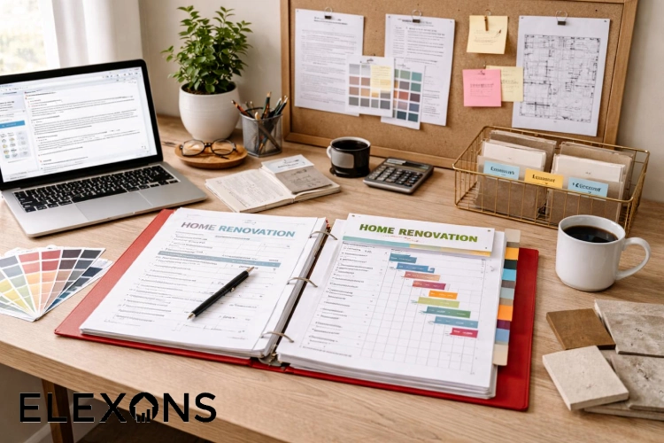
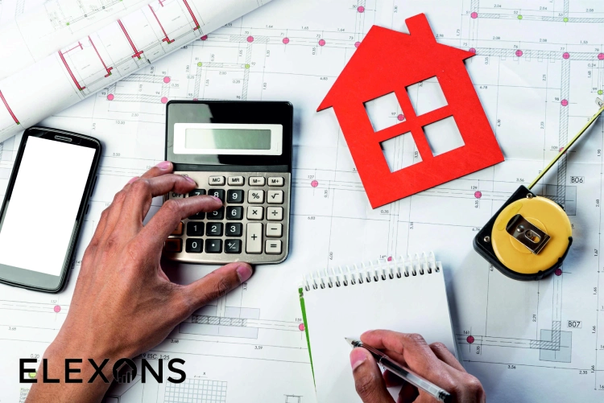
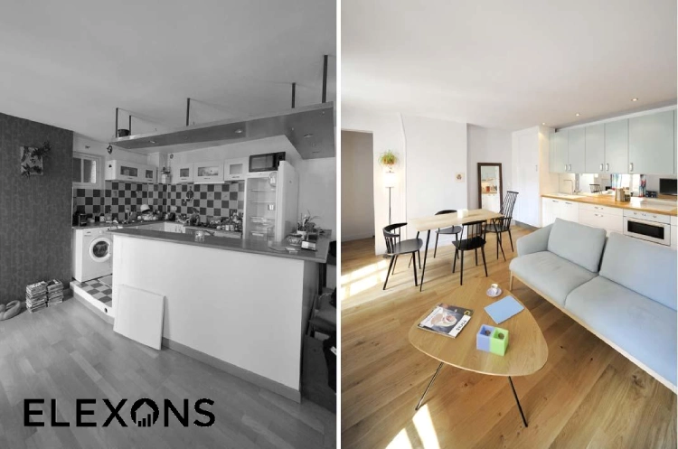

Preise, Faktoren und realistische Budgetplanung für Ihr Umbauprojekt in Zürich.
Kostenlose BeratungKontaktieren Sie uns für eine kostenlose Erstberatung – unverbindlich, persönlich und ohne versteckte Kosten.
Kostenlose BeratungWenn es um eine Modernisierung oder Anpassung von Wohnraum geht, ist eine der häufigsten Fragen: Was kostet eine Grundrissänderung eigentlich wirklich? Viele Eigentümer oder Käufer stehen irgendwann vor der Situation, dass die bestehende Raumaufteilung nicht mehr zum Leben passt. Ob offene Wohnküche, ein zusätzliches Kinderzimmer oder das Zusammenlegen kleiner Räume – die Planung klingt oft einfacher, als sie später umgesetzt werden kann. Genau an diesem Punkt entstehen die Umbau Kosten, die stark variieren können und von vielen Faktoren abhängen.
Besonders in älteren Gebäuden zeigt sich häufig, dass Wände nicht nur optische Trennelemente sind, sondern tragende Funktionen haben oder wichtige Leitungen enthalten. Dadurch wird eine Grundrissänderung schnell zu einem komplexen Bauprojekt. Die Umbau Kosten hängen deshalb nicht nur von der Größe des Projekts ab, sondern auch von Statik, Material, Genehmigungen und handwerklichem Aufwand.
In diesem Artikel erfährst du detailliert, welche Faktoren die Umbau Kosten beeinflussen, welche typischen Preisbereiche realistisch sind und wie du dein Budget besser planen kannst.
Bevor man die Umbau Kosten realistisch einschätzen kann, ist es wichtig zu verstehen, was genau eine Grundrissänderung bedeutet. Dabei handelt es sich nicht nur um das einfache Versetzen einer Wand, sondern um eine strukturelle Veränderung der Raumaufteilung eines Gebäudes. Diese kann sowohl kleine als auch sehr umfangreiche bauliche Maßnahmen umfassen.
In der Praxis reicht die Spanne von einfachen Trockenbauwänden bis hin zu kompletten statischen Eingriffen in die Gebäudestruktur. Je komplexer die Maßnahme, desto stärker steigen auch die Umbau Kosten. Besonders relevant wird das Thema, wenn tragende Wände betroffen sind oder neue Installationen wie Elektrik oder Sanitär verlegt werden müssen.
Bei einer kosmetischen Änderung handelt es sich meist um einfache Anpassungen wie das Entfernen nicht tragender Wände oder das Einziehen von Leichtbauwänden. Diese Arbeiten sind relativ günstig und beeinflussen die Umbau Kosten nur geringfügig.
Strukturelle Änderungen hingegen betreffen die Tragfähigkeit eines Gebäudes. Hier müssen oft Statiker hinzugezogen werden, was die Umbau Kosten deutlich erhöht. Zusätzlich entstehen Kosten für Genehmigungen und eventuell notwendige Stahlträger oder Verstärkungen.
Die große Preisspanne bei Umbau Kosten entsteht vor allem durch die individuellen Gegebenheiten jedes Gebäudes. Baujahr, Zustand, Material und vorhandene Leitungen spielen eine entscheidende Rolle.
Ein weiterer wichtiger Faktor ist die Zugänglichkeit der Baustelle. In einem Mehrfamilienhaus mit engen Treppenhäusern sind die Umbau Kosten meist höher als in einem frei zugänglichen Einfamilienhaus.
Die Umbau Kosten setzen sich aus vielen einzelnen Komponenten zusammen, die sich gegenseitig beeinflussen. Deshalb ist es kaum möglich, einen pauschalen Preis zu nennen. Stattdessen muss jedes Projekt individuell betrachtet werden.
Wichtige Faktoren sind unter anderem die Art der Wandarbeiten, die notwendige Technik, die Größe der Fläche und der Aufwand für Fachplaner.

Einer der wichtigsten Kostenfaktoren sind tragende Wände. Werden diese entfernt oder verändert, steigen die Umbau Kosten erheblich, da statische Berechnungen notwendig sind.
Nicht tragende Wände hingegen können meist relativ einfach entfernt oder versetzt werden, was die Umbau Kosten deutlich reduziert. Dennoch müssen auch hier elektrische Leitungen oder Heizungsrohre berücksichtigt werden.
Sobald ein neuer Grundriss entsteht, müssen oft Leitungen angepasst werden. Steckdosen, Lichtschalter oder Heizkörper befinden sich plötzlich an falschen Stellen und müssen verlegt werden.
Diese Arbeiten sind oft versteckte Kostentreiber. Besonders Sanitärinstallationen können die Umbau Kosten stark erhöhen, da sie mit viel Aufwand verbunden sind und häufig Wand- oder Bodenöffnungen erfordern.
Die Wahl der Materialien hat ebenfalls großen Einfluss auf die Umbau Kosten. Ein einfacher Trockenbau ist deutlich günstiger als massive Mauerwerke oder hochwertige Schallschutzlösungen.
Auch die Arbeitskosten unterscheiden sich stark je nach Region und Fachbetrieb. In Großstädten sind die Umbau Kosten in der Regel höher als in ländlichen Regionen.
Um die Umbau Kosten besser einschätzen zu können, helfen typische Richtwerte. Diese können zwar je nach Projekt stark variieren, bieten aber eine gute Orientierung.
Grundsätzlich gilt: Je komplexer die Änderung, desto höher die Umbau Kosten pro Quadratmeter.
Bei einfachen Maßnahmen wie dem Entfernen nicht tragender Wände oder dem Einziehen von Trockenbauwänden liegen die Umbau Kosten meist zwischen 50 und 150 Euro pro Quadratmeter.
Diese Art von Umbau ist besonders beliebt, da sie schnell umgesetzt werden kann und vergleichsweise geringe Kosten verursacht.
Wenn zusätzlich Elektrik oder Heizung angepasst werden müssen, steigen die Umbau Kosten deutlich. Hier liegt man oft zwischen 150 und 400 Euro pro Quadratmeter.
Diese Kategorie umfasst viele typische Wohnungsmodernisierungen, bei denen Räume neu strukturiert werden.
Sobald tragende Wände betroffen sind oder größere bauliche Eingriffe erfolgen, können die Umbau Kosten schnell auf 400 bis 1.000 Euro pro Quadratmeter steigen.
Hier sind oft Architekten, Statiker und mehrere Handwerksgewerke beteiligt, was den Preis stark erhöht.

Ein oft unterschätzter Teil der Umbau Kosten sind die Planungs- und Genehmigungskosten. Gerade bei strukturellen Änderungen ist eine Baugenehmigung erforderlich.
Diese Kosten werden häufig nicht direkt mit dem Handwerk verbunden, sind aber ein wichtiger Bestandteil des Gesamtbudgets.
Architekten übernehmen die Planung und Koordination des Umbaus, während Statiker die Sicherheit der Konstruktion prüfen. Beide Leistungen verursachen zusätzliche Umbau Kosten.
Je nach Projekt können diese Planungskosten zwischen 5 % und 15 % der Gesamtkosten ausmachen.
Nicht jede Grundrissänderung ist genehmigungspflichtig, aber viele größere Projekte erfordern eine offizielle Zustimmung. Diese Genehmigungen sind zwar meist nicht extrem teuer, sollten aber bei den Umbau Kosten berücksichtigt werden.
Neben den offensichtlichen Kosten gibt es auch viele versteckte Faktoren, die die Umbau Kosten erhöhen können. Diese werden oft erst während der Bauphase sichtbar.
Dazu gehören unvorhergesehene Schäden, zusätzliche Materialanforderungen oder Verzögerungen im Bauablauf.
Gerade in Altbauten stoßen Handwerker häufig auf unerwartete Probleme wie alte Leitungen, Feuchtigkeit oder instabile Wände. Diese Faktoren können die Umbau Kosten deutlich erhöhen.
Auch der Abtransport von Bauschutt und die Einrichtung der Baustelle verursachen zusätzliche Kosten. Je größer das Projekt, desto höher die Umbau Kosten in diesem Bereich.
Es gibt verschiedene Möglichkeiten, die Umbau Kosten zu optimieren, ohne die Qualität des Projekts zu gefährden.
Eine gute Planung im Vorfeld ist dabei der wichtigste Faktor.
Je früher ein Architekt oder Fachplaner eingebunden wird, desto besser lassen sich unnötige Kosten vermeiden. Eine gute Planung reduziert Fehler und senkt langfristig die Umbau Kosten.
Ein weiterer wichtiger Punkt ist der Vergleich verschiedener Handwerksbetriebe. Die Umbau Kosten können je nach Anbieter stark variieren.
Nicht jede Idee muss sofort umgesetzt werden. Wer Prioritäten setzt, kann die Umbau Kosten besser kontrollieren und das Projekt Schritt für Schritt realisieren.
Die Umbau Kosten für eine Grundrissänderung hängen von vielen unterschiedlichen Faktoren ab und lassen sich nicht pauschal festlegen. Entscheidend sind vor allem die Art der baulichen Veränderung, die Statik des Gebäudes, die notwendigen Installationen sowie die Planungskosten.
Während einfache Umbauten relativ günstig umgesetzt werden können, steigen die Umbau Kosten bei komplexen Projekten schnell stark an. Besonders tragende Wände, Altbauprobleme und technische Anpassungen treiben den Preis nach oben.
Wer seine Umbau Kosten realistisch planen möchte, sollte frühzeitig Experten einbinden, Angebote vergleichen und eine klare Struktur für das Projekt festlegen. So lassen sich unnötige Ausgaben vermeiden und das Budget besser kontrollieren. Für eine kostenlose Beratung stehen wir Ihnen jederzeit zur Verfügung.
Wie hoch sind die Umbau Kosten für eine einfache Grundrissänderung?
Einfache Änderungen ohne statische Eingriffe liegen meist zwischen 50 und 150 Euro pro Quadratmeter. Diese Umbau Kosten gelten vor allem für Trockenbau und nicht tragende Wände.
Warum sind die Umbau Kosten im Altbau höher?
Altbauten enthalten oft versteckte Probleme wie alte Leitungen oder instabile Strukturen. Diese unvorhersehbaren Faktoren erhöhen die Umbau Kosten deutlich.
Muss ich für jede Grundrissänderung eine Genehmigung beantragen?
Nicht jede Änderung ist genehmigungspflichtig, aber sobald tragende Wände betroffen sind oder die Statik verändert wird, steigen die Umbau Kosten durch zusätzliche Genehmigungen und Planung.